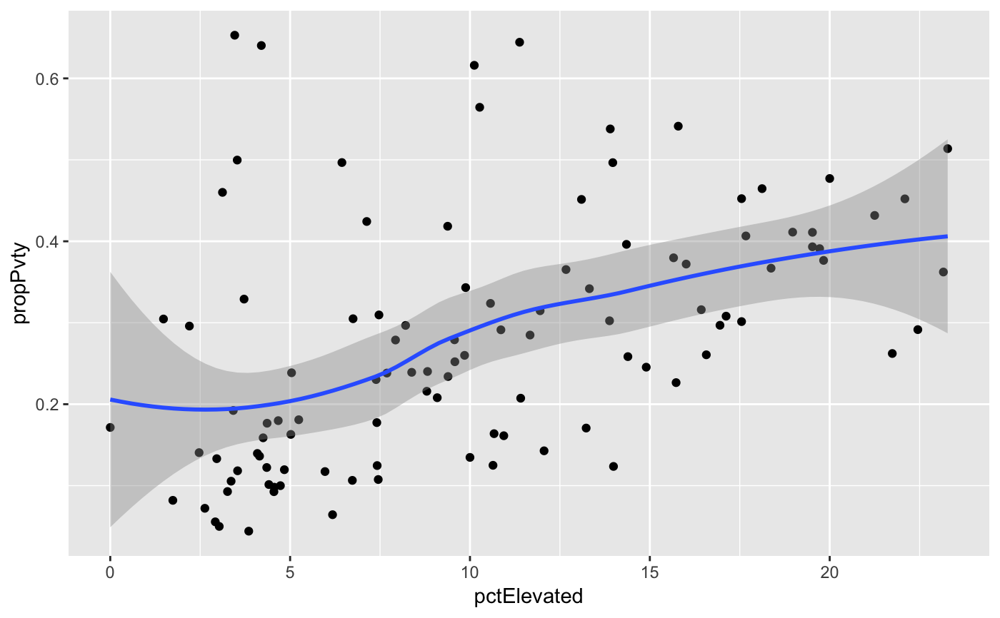

A data set containing blood lead test results as well as race and poverty data for the City of St. Louis by Census Tract. All demographic data are from the 2015 5-year American Community Survey estimates for St. Louis Census Tracts.
data(stl_tbl_lead)
A tibble with 106 rows and 15 variables:
full census tract id number
census tract id number
census tract string
number of children screened for blood lead levels between 2010 and 2015
percentage of children tested who had blood lead levels greater than or equal to 5 micrograms per deciliter
total population estimate, 2015
margin of error for totalPop
estimate for white population, 2015
margin of error for white
estimate for black population, 2015
margin of error for black
estimate for persons living below poverty line, 2015
margin of error for povertyTot
estimate for children living below poverty line, 2015
margin of error for povertyU18
Reuters reporting on lead exposure and 2015 5-year American Community Survey estimates for City of St. Louis Census Tracts via American Fact Finder
Pell, M.B. & Schneyer, J. (2016, December 19). Off the Charts: The thousands of U.S. locales where lead poisoning is worse than in Flint. Reuters, retrieved from website.
str(stl_tbl_lead)#> Classes ‘tbl_df’, ‘tbl’ and 'data.frame': 106 obs. of 15 variables: #> $ geoID : chr "29510118100" "29510117400" "29510126700" "29510119102" ... #> $ tractCE : int 118100 117400 126700 119102 126800 126900 108100 127000 127400 103700 ... #> $ nameLSAD : chr "Census Tract 1181" "Census Tract 1174" "Census Tract 1267" "Census Tract 1191.02" ... #> $ countTested : int 345 871 458 182 486 1296 903 585 2116 417 ... #> $ pctElevated : num 9.57 12.06 18.12 2.2 4.73 ... #> $ totalPop : int 1161 4307 1089 3237 3490 4590 3144 2052 5486 2408 ... #> $ totalPop_MOE : int 192 447 199 309 231 826 464 273 516 274 ... #> $ white : int 414 2604 432 2008 3026 148 108 304 1777 2149 ... #> $ white_MOE : int 100 303 116 262 270 217 111 82 391 212 ... #> $ black : int 724 1338 631 646 194 4320 3020 1739 3603 156 ... #> $ black_MOE : int 179 374 187 210 98 760 442 283 621 190 ... #> $ povertyTot : int 324 615 506 958 349 1743 652 331 2524 254 ... #> $ povertyTot_MOE: int 140 255 164 234 129 825 305 156 598 88 ... #> $ povertyU18 : int 109 169 98 15 35 627 256 47 1110 15 ... #> $ povertyU18_MOE: int 105 156 60 25 47 595 136 79 318 23 ...head(stl_tbl_lead)#> # A tibble: 6 x 15 #> geoID tractCE nameLSAD countTested pctElevated totalPop totalPop_MOE white #> <chr> <int> <chr> <int> <dbl> <int> <int> <int> #> 1 29510… 118100 Census Tr… 345 9.57 1161 192 414 #> 2 29510… 117400 Census Tr… 871 12.1 4307 447 2604 #> 3 29510… 126700 Census Tr… 458 18.1 1089 199 432 #> 4 29510… 119102 Census Tr… 182 2.20 3237 309 2008 #> 5 29510… 126800 Census Tr… 486 4.73 3490 231 3026 #> 6 29510… 126900 Census Tr… 1296 15.7 4590 826 148 #> # ... with 7 more variables: white_MOE <int>, black <int>, black_MOE <int>, #> # povertyTot <int>, povertyTot_MOE <int>, povertyU18 <int>, #> # povertyU18_MOE <int>summary(stl_tbl_lead$pctElevated)#> Min. 1st Qu. Median Mean 3rd Qu. Max. #> 0.000 4.588 9.480 10.164 14.380 23.280summary(stl_tbl_lead$black)#> Min. 1st Qu. Median Mean 3rd Qu. Max. #> 35.0 633.2 1334.5 1429.9 2029.0 4572.0summary(stl_tbl_lead$povertyTot)#> Min. 1st Qu. Median Mean 3rd Qu. Max. #> 158.0 408.5 651.5 786.9 955.8 2801.0if (require("dplyr") & require("ggplot2")) { # what is the relationship between race and lead test results? stl_tbl_lead %>% mutate(propBlack = black / totalPop) %>% ggplot(aes(x = pctElevated, y = propBlack)) + geom_point() + geom_smooth() # relationship between poverty and lead test results? stl_tbl_lead %>% mutate(propPvty = povertyTot / totalPop) %>% ggplot(aes(x = pctElevated, y = propPvty)) + geom_point(method=lm) + geom_smooth() }#>#> #>#> #> #>#> #> #>#>#> #>#> Warning: Ignoring unknown parameters: method#>